Advance Settings
The Advanced Settings section allows administrators to customize key functionalities, including KRA module configurations, KPI settings, and appraisal review delegation. Here, you can streamline performance management processes, ensuring they align with organizational goals and enhance operational efficiency.
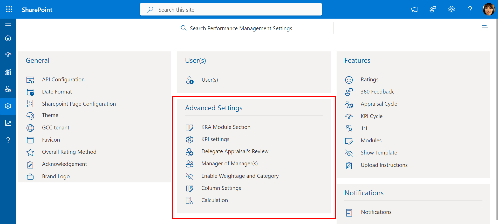
The KRA Module Section allows administrators to customize key components of the self-review process. Here, you can toggle options for features such as Achievements, Self Reflections, and Employee's Action Plan. Additionally, you can manage summaries by both employees and appraisers, agree upon goals, and enforce mandatory KRAs, ensuring a tailored review experience that aligns with organizational objectives.
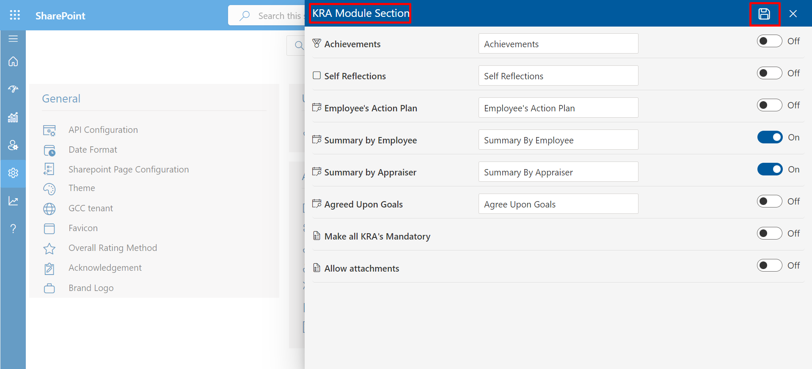
Define the approval authority for KPIs by selecting from HR, Manager, or Both. This feature streamlines the approval process, ensuring clarity and accountability in KPI management.
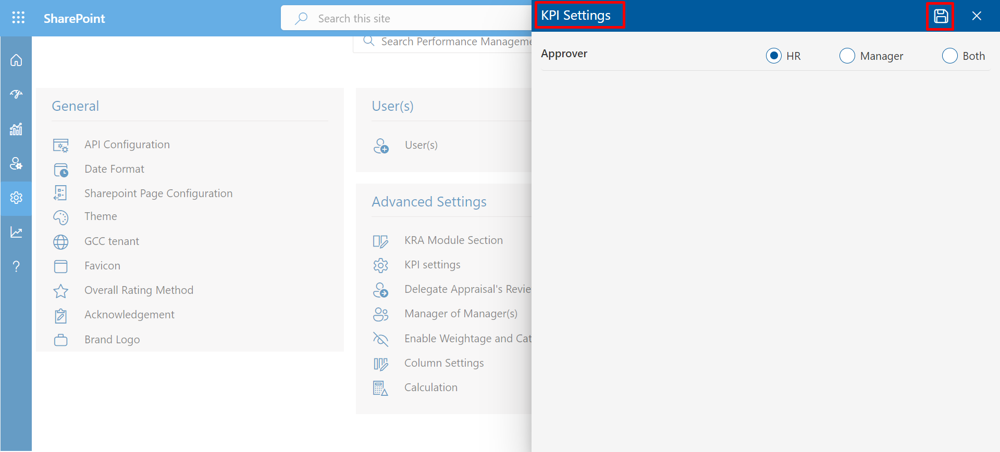
When enabled, this setting allows managers to directly fill in the employee's self-review, streamlining the appraisal process and enhancing collaboration between managers and their team members.
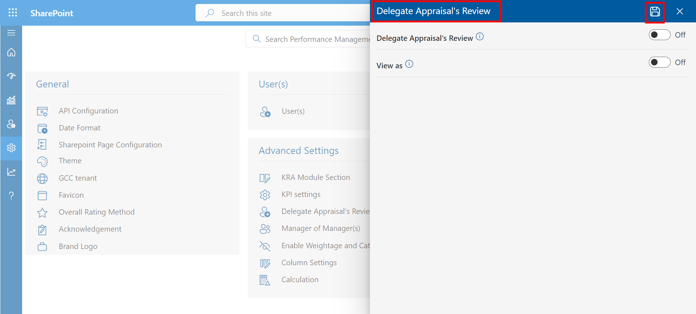
When this setting is enabled, it grants higher-level managers the ability to edit the reviews submitted by their direct reports, allowing for comprehensive oversight and ensuring that the self-reviews align with organizational goals.
The Enable Weightage and Category feature allows users to assign weightage to different Key Result Areas (KRAs) and categorize them for better performance assessment. Users can toggle these settings on or off to customize how performance is evaluated, ensuring that both target and achieved metrics are clearly defined and measurable.
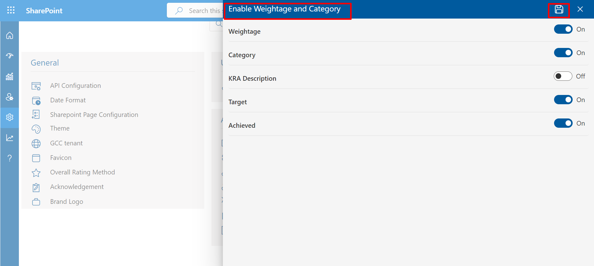
The Column Settings feature provides users with the ability to customize the visibility and arrangement of key review components. With three options available Self Review, Appraiser's Review, and HR Review users can easily configure and change these settings.
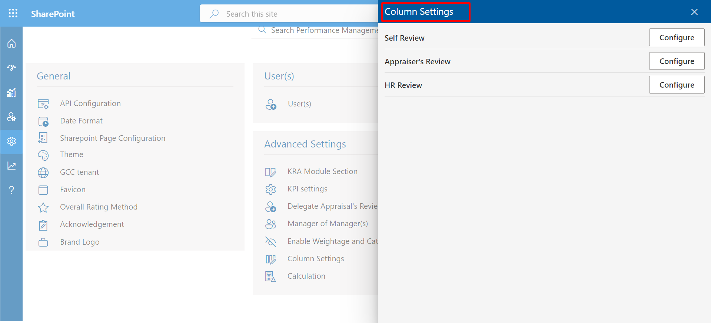
The Self Review Column feature allows users to easily drag and drop elements for customized review organization. This intuitive setup ensures a streamlined and personalized self-review experience.
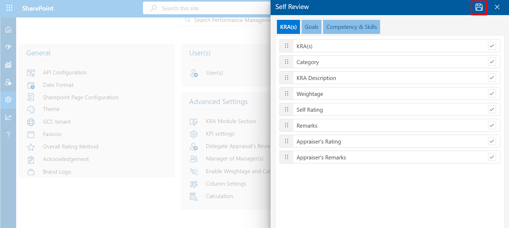
The Appraiser's Review feature enables users to drag and drop elements for tailored organization of appraisal items. This functionality enhances the review process, allowing for a streamlined and personalized experience for appraisers.
The HR Review Column feature allows users to drag and drop elements for customized organization of HR appraisal items. This functionality streamlines the HR review process, ensuring a tailored and efficient experience.
In this system, Question Weightage calculates ratings based on individual question weights, while Category Weightage calculates ratings based on the overall weight of each category, ensuring balanced evaluations.
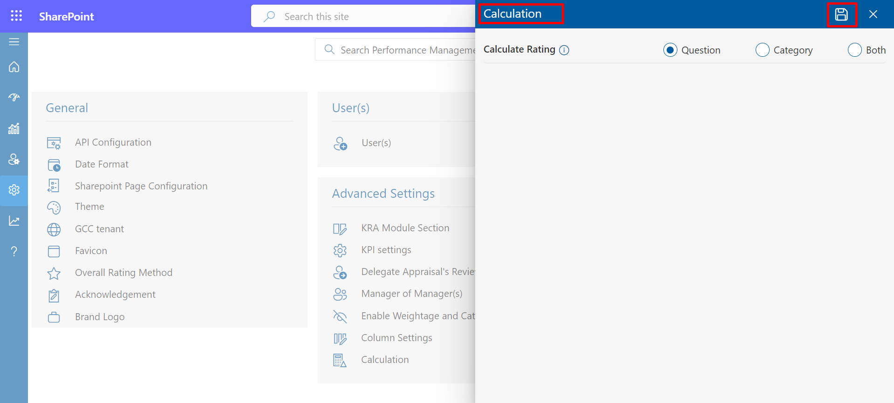
Select your preferred option from the list, and your rating will be assigned based on your choice.
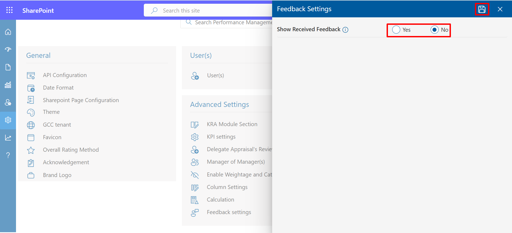
A new column setting has been introduced for the Additional Appraiser Review, enabling better visibility and structured evaluation.
An HR Manager toggle has been added under Advanced Settings.
When enabled, this allows HR Managers to edit remarks submitted by both the
Appraiser and the Additional Appraiser, providing greater flexibility and
control in the review process.
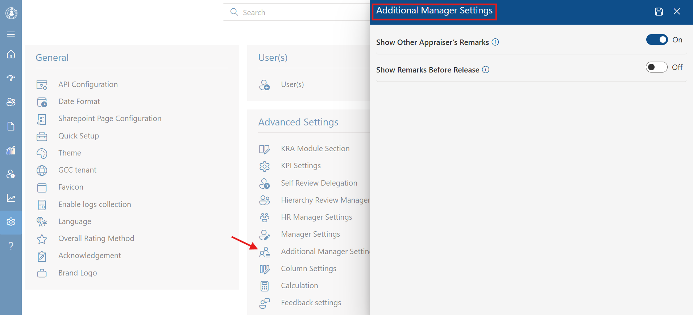
The Hide Recurrence option allows you to hide the recurrence checkbox in the 1:1 meeting setup.
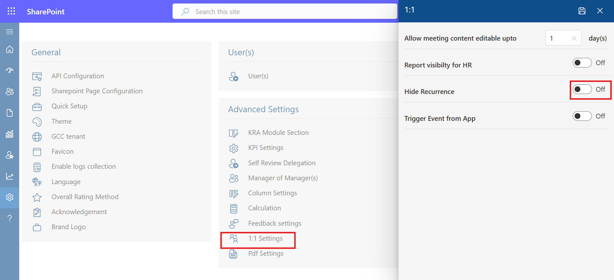
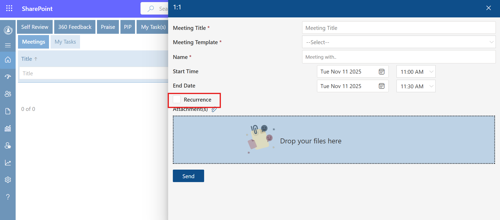
When enabled, the recurrence option will not be visible while scheduling meetings.
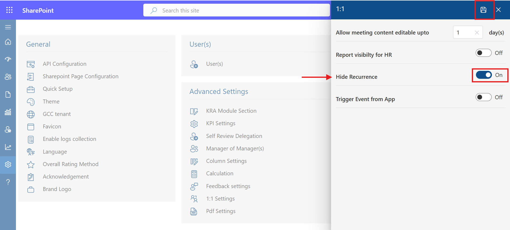
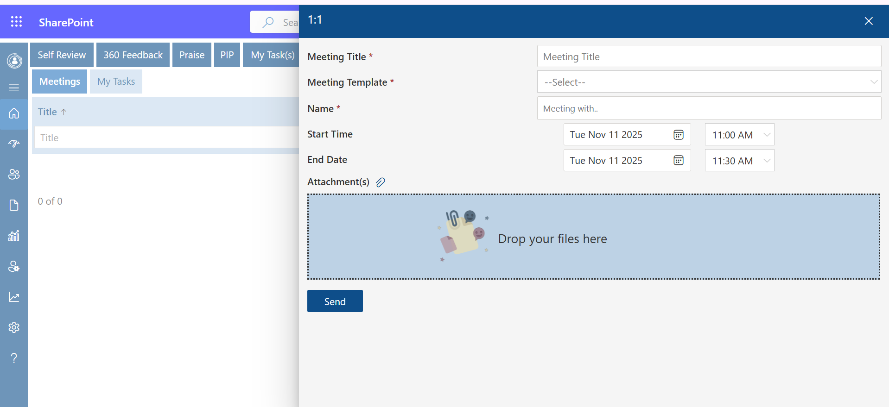
Use the PDF Settings option to set the logo alignment in PDF reports. Choose to align it to the Left, Right, or Center as per your preference.
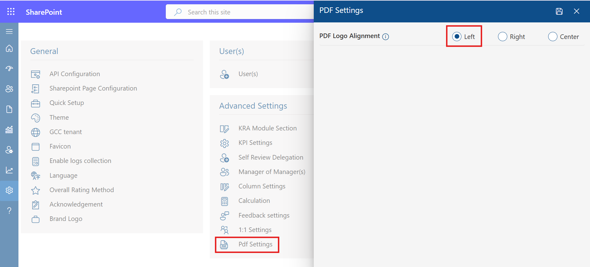
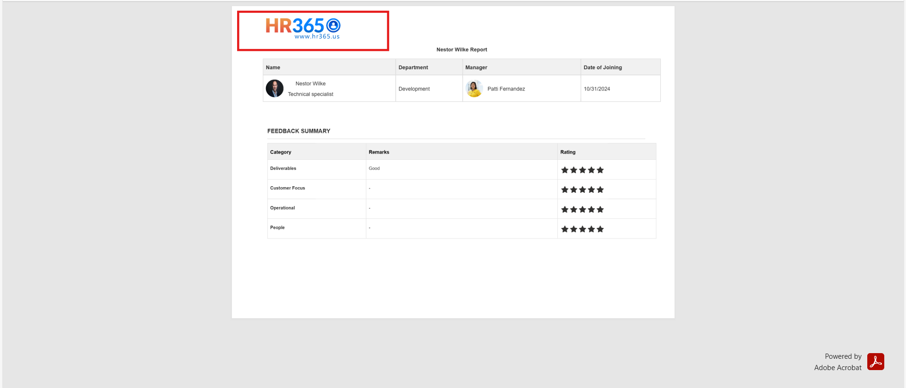
360 Feedback – Feedback Settings
Feedback Settings control how the 360 Feedback module behaves for all users in your organization. These settings are managed by the administrator and can be accessed from the 360 Feedback section in Admin Settings.
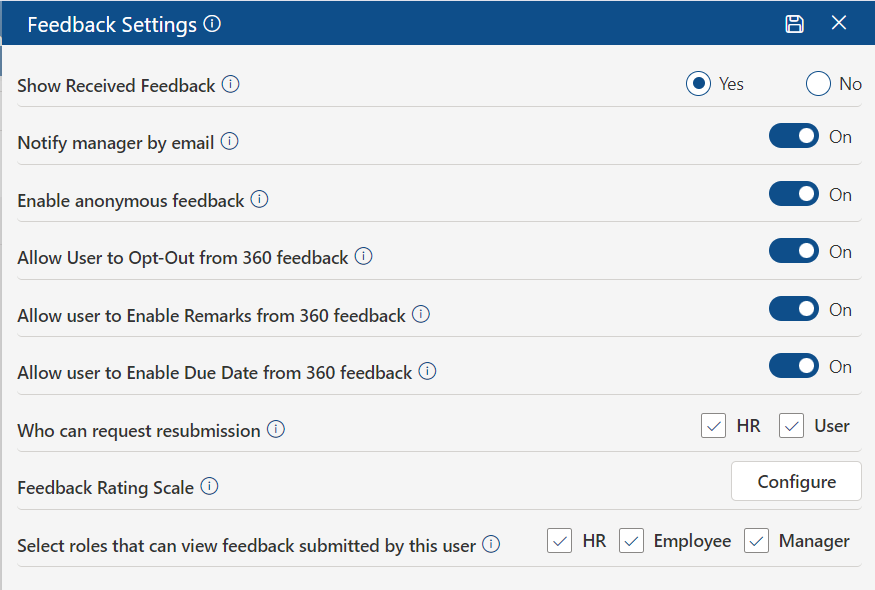
Feedback Settings panel
Settings Reference
The table below describes each setting, what it does when enabled, and what users see as a result.
| Setting | What it does |
| Show Received Feedback | Controls whether feedback received by a user is visible to them on the Received tab. Set to Yes to allow users to see all feedback given to them. |
| Notify Manager by Email | When enabled, the user's direct manager receives an email notification whenever the user is sent a 360 Feedback request. |
| Enable Anonymous Feedback | When enabled, the Give Feedback form displays a 'Keep my feedback anonymous' checkbox. If checked by the respondent, their name is hidden from the feedback recipient. |
| Allow User to Opt-Out from 360 Feedback | When enabled, users who receive a feedback request can choose to opt out of responding. An Opt-Out option appears in the action menu on the Action tab. |
| Allow User to Enable Remarks | When enabled, a Remarks field appears in both the Self and My Team feedback request panels, letting the requestor add context or instructions for the respondent. |
| Allow User to Enable Due Date | When enabled, a Select Due Date field appears in both the Self and My Team feedback request panels. The due date is shown to the respondent on the Give Feedback form. |
| Who Can Request Resubmission | Defines which roles (HR and/or User) can request that a respondent resubmit their feedback. When selected, a 'Request Resubmission' option appears in the action menu on the Received tab. |
| Feedback Rating Scale | Allows administrators to configure custom rating scales (e.g., 5-star, 10-star) that can be assigned to feedback templates. Click Configure to add or manage scales. Once a scale is added, it must be selected on the relevant template in Administration before it takes effect during feedback requests. |
| Select Roles That Can View Feedback Submitted by This User | Controls which roles (HR, Employee, Manager) can view the feedback a user has submitted. Restricting this protects respondent confidentiality where needed. |
Enable Anonymous Feedback
When this setting is on, the Give Feedback form shows a 'Keep my feedback anonymous' checkbox. If the respondent checks it before submitting, their identity is hidden from the person who requested the feedback.
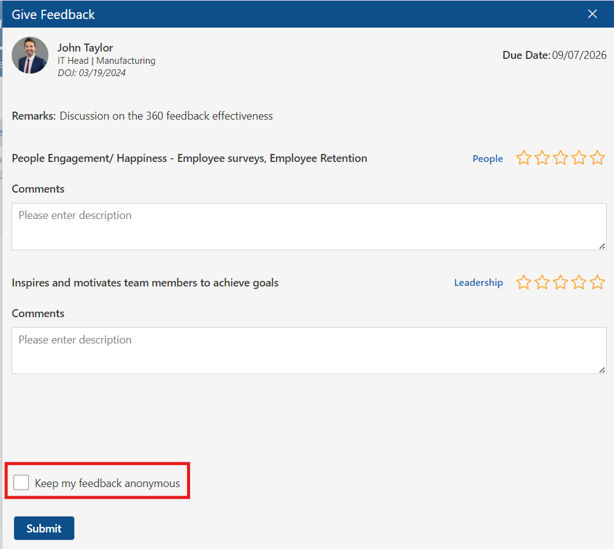
Give Feedback form — 'Keep my feedback anonymous' checkbox
Allow User to Opt-Out from 360 Feedback
When enabled, users who have been sent a feedback request can choose not to respond by selecting Opt-Out from the action menu (⋮) on the Action tab. This removes the request from their queue without submitting any feedback.
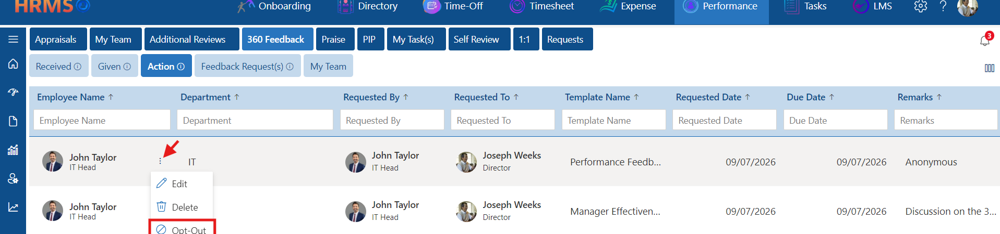
Action tab — Opt-Out option in the row action menu
Allow User to Enable Due Date / Remarks
When either of these settings is on, the corresponding field becomes visible in the Request Feedback panel for both Self and My Team requests. The Due Date is displayed to the respondent on the Give Feedback form; Remarks let the requestor add instructions or context for the respondent.
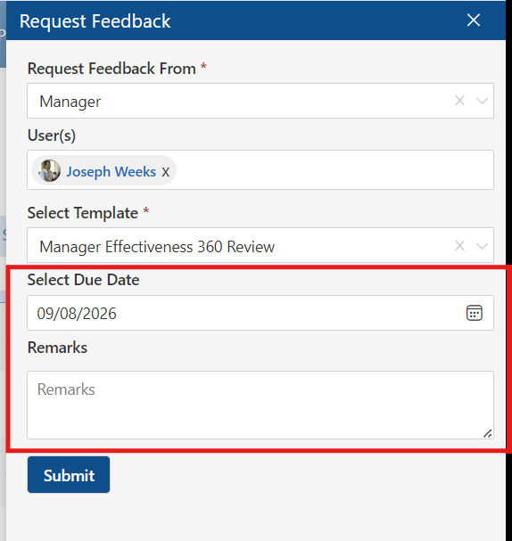
Self Feedback Request panel — Due Date and Remarks fields
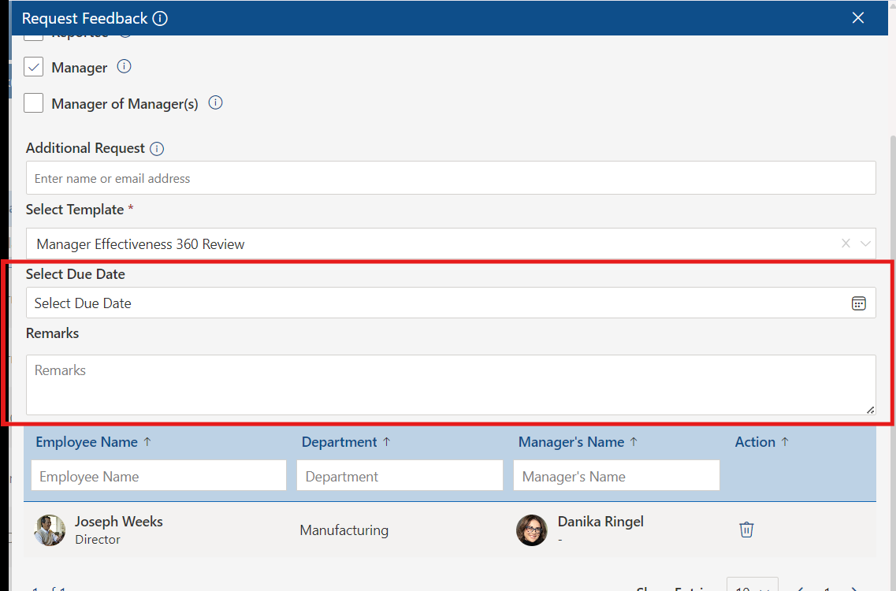
My Team Feedback Request panel — Due Date and Remarks fields
Who Can Request Resubmission
Selecting HR and/or User enables those roles to request that a respondent redo their feedback submission. The 'Request Resubmission' option then appears in the action menu (⋮) on the Received tab for any completed feedback entry.
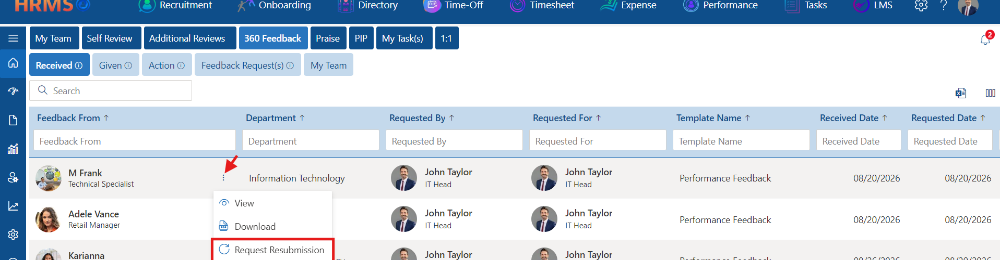
Received tab — Request Resubmission option in the row action menu
Feedback Rating Scale
This option lets administrators define custom rating scales — such as a 5-point or 10-point scale — that can be applied to feedback templates. Each scale has a name and a numeric range, and rating labels (e.g., Poor, Satisfactory, Outstanding) can be configured per scale.
Once a rating scale is created here, it must be assigned to the relevant feedback template in Administration. When a user selects that template while requesting feedback, the configured rating scale is automatically applied to the Give Feedback form.
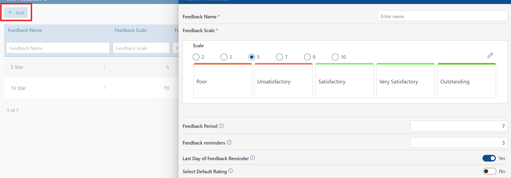
Feedback Rating Scale — Configure panel with scale options and labels
Select Roles That Can View Feedback Submitted by This User
This setting controls which roles can see the feedback a user has given to others. Checking HR, Employee, and/or Manager restricts or grants visibility accordingly. This is useful for maintaining respondent confidentiality in sensitive feedback scenarios.
ℹ Note
All Feedback Settings apply organization-wide. Changes take effect immediately for all users.